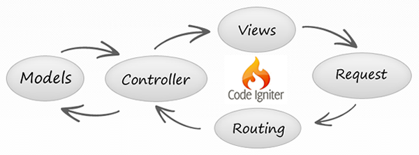

Documentación
Introducción
Contexto
Viendo la cantidad de programadores que actualmente trabajan usando tecnologías como Wordpress, Joomla y demás... , cuando realmente no hace falta tanto sistema de gestión.
O muchas veces empiezan de cero, sin usar ningún framework, perdiendo mucho tiempo, cuando tendría que ser algo más sencillo y estructurado.
La creación de una "base" para desarrollar futuros proyectos es lo que me propongo hacer.
Una "base" que te ahorre horas de programación al empezar proyectos sencillos, en los que solo se desea dar publicidad a un producto o servicio. Con un panel de gestión sencillo, en donde se pueda modificar las diferentes secciones de la web.
Descripción
El proyecto a desarrollar quiere ser la programación base para ahorrarme tiempo cada vez que busque crear una web con los siguientes requerimientos:
- Página principal con lo más destacado
- Página de noticias
- Página de eventos por fecha
- Página con galerias de imágenes
- Página con videos
- Página de información acerca del propietario
- Panel de administración
Análisis de Requerimientos
Requisitos Funcionales
- RF01 - Inicio de sesión en Panel de Gestión
- El sistema deberá validar la información correspondiente al usuario y permitir el ingreso a la plataforma. El usuario deberá tener un usuario registrado en la web para poder visualizar el panel de gestión.
- REQ ASOCIADO: RF02, RF03, RF04, RF05
- RF02 - Gestión de Noticias
- Al iniciar sesión en el sistema deberá permitir al administrador crear, actualizar o eliminar las diferentes noticias de la base de datos.
- REQ ASOCIADO: RF01
- RF03 - Gestión de Eventos
- Al iniciar sesión en el sistema deberá permitir al administrador crear, actualizar o eliminar los diferentes eventos de la base de datos. Que serán reflejados en el calendario.
- REQ ASOCIADO: RF01
- RF04 - Gestión de Fotografías
- Al iniciar sesión en el sistema deberá permitir al administrador subir o eliminar fotografías de la galería.
- REQ ASOCIADO: RF01
- RF05 - Gestión de Vídeos
- Al iniciar sesión en el sistema deberá permitir al administrador subir o eliminar vídeos de la galería.
- REQ ASOCIADO: RF01
- RF06 - Inicio de sesión a través de Redes Sociales
- El sistema debe poder permitir el Inicio de Sesión solo a través de la API de Facebook. (Twitter y G+ no requeridas pero aconsejable)
- REQ ASOCIADO: RF07
- RF07 - Postear Comentario
- El sistema debe poder permitir comentar entradas de la web si se ha iniciado sesión a través de alguna red social.
- REQ ASOCIADO: RF06
Requisitos No Funcionales
- RNF01 - Nivel de Usuario
- El sistema deberá permitir visualizar y gestionar la plataforma, según los roles de usuario como administrador o usuario general.
- REQ ASOCIADO: RF01
- RNF02 - Interfaz del Usuario
- El sistema deberá contar con una plataforma agradable, eficaz e interesante.
- REQ ASOCIADO: RF01
- RNF3 - Acceso al software
- El sistema estará en línea deberá permitir que los usuarios y el administrador accedan a la página web.
- REQ ASOCIADO: RF01
Diagrama de Gantt
Presupuesto
Analisis
Base de datos
Previsión URLs Amigables
Usuario
- lsdta.es/ - Inicio
- lsdta.es/noticias - Listado de las noticias
- lsdta.es/noticias/estrenamos-nuevo-videoclip - Muestra noticia concreta
- lsdta.es/conciertos - Listado de conciertos
- lsdta.es/conciertos/20-10-2014 - Evento en concreto
- lsdta.es/discografia
- lsdta.es/galerias - Galería Principal + listado de Galerías
- lsdta.es/galerias/11-02-2014 - Elementos de una galería en concreto
- lsdta.es/sobre - Información acerca del grupo
- lsdta.es/contacto - Página de contacto
Panel de Administración
- lsdta.es/admin/ - Inicio del panel
- lsdta.es/admin/login - Login
- lsdta.es/admin/noticias - Gestión de noticias
- lsdta.es/admin/noticias/add - Añadir noticia
- lsdta.es/admin/eventos - Gestión de eventos
- lsdta.es/admin/eventos/add - Añadir eventos
- lsdta.es/admin/discografia - Gestión de discografía
- lsdta.es/admin/discografia/add - Añadir discografía
- lsdta.es/admin/galerias - Gestión con listado de galerías
- lsdta.es/admin/galerias/edit - Editar galería
- lsdta.es/admin/sobre - Edición de "Sobre"
- lsdta.es/admin/contacto - Configuración del contacto
Arquitectura
La arquitectura que se va a utilizar para este proyecto es de MVC (Modelo Vista Controlador) ya que como framework, he usado Codeigniter.
Cuaderno de Bitácora
Puedes acceder al cuaderno haciendo click en el enlace: Acceder
Créditos
Desarrollado por: Alberto Punter.